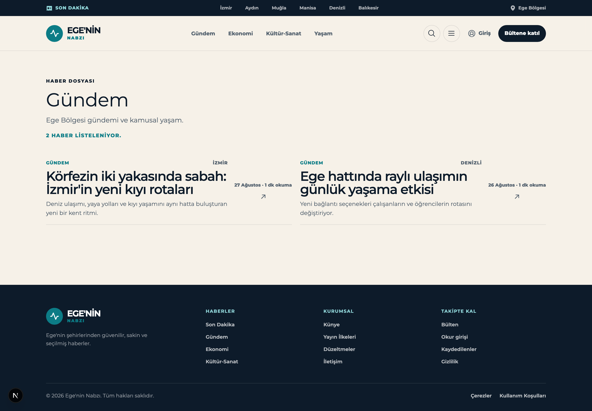
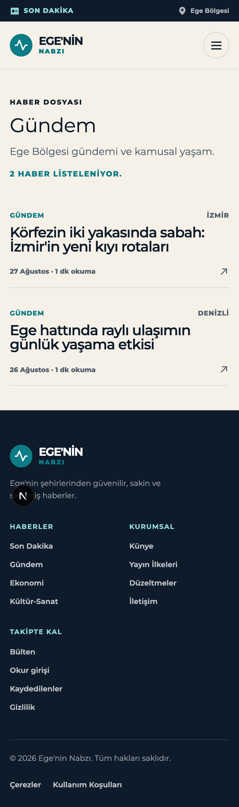
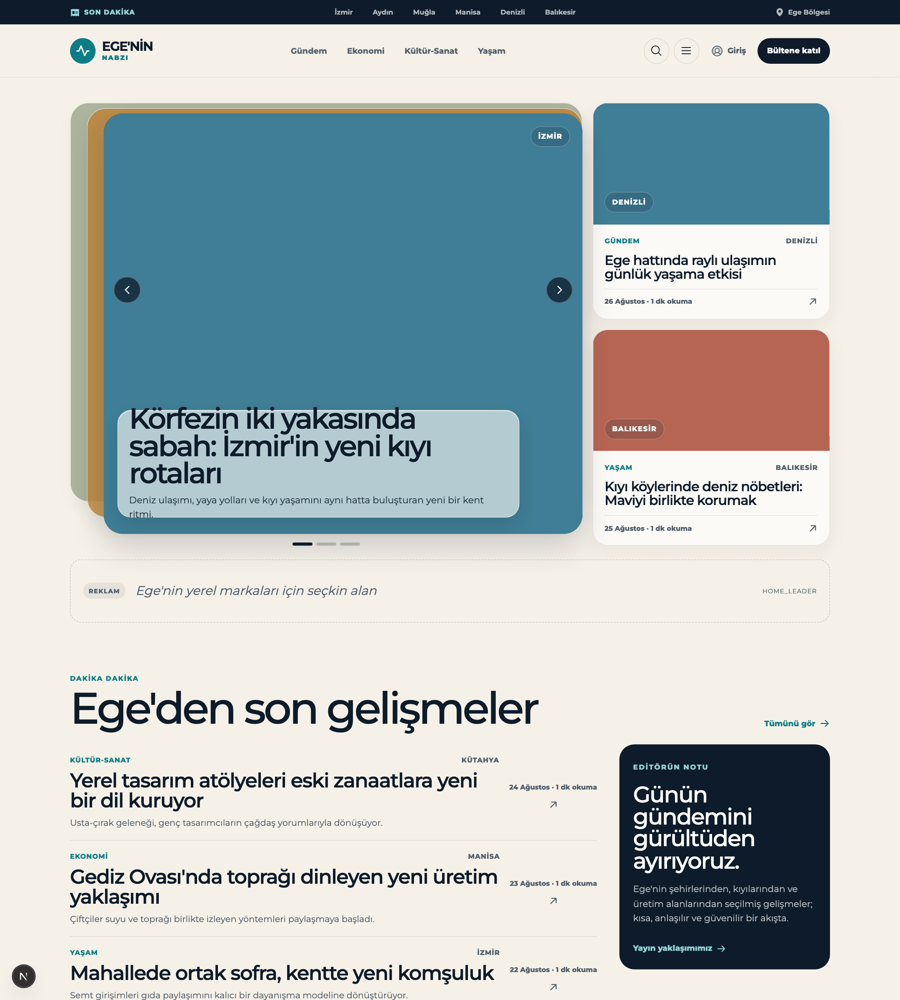
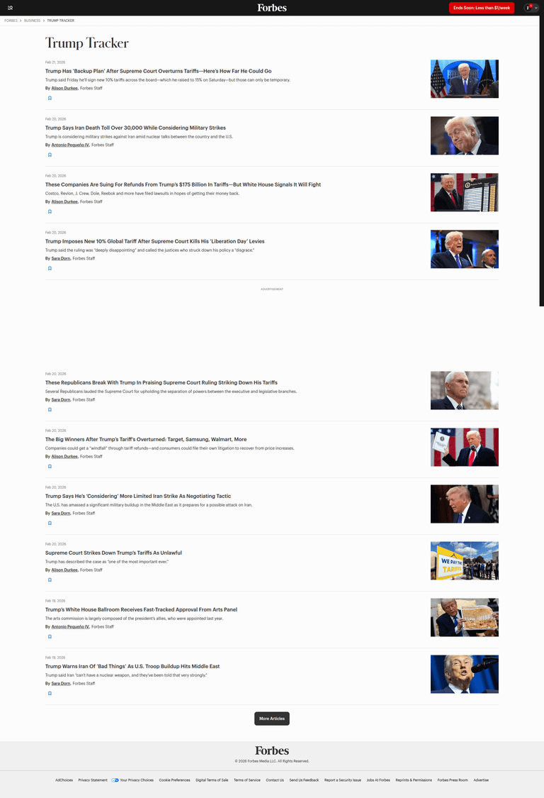
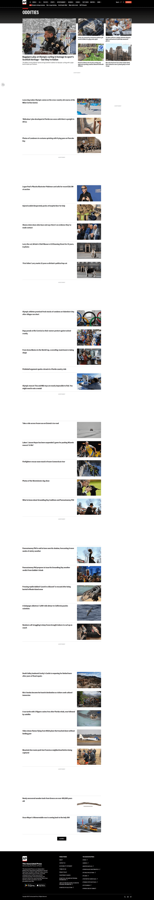
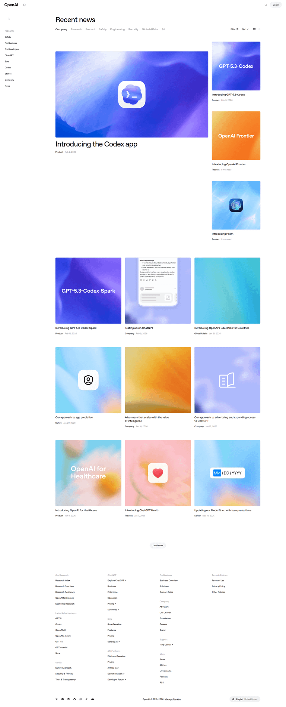
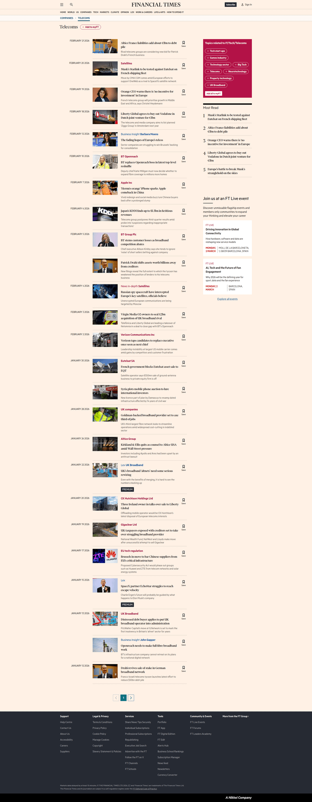

Design Improvement: Kategori Detay Sayfası (/kategori/[slug])
TL;DR
The category page is the only surface on the site that renders zero imagery — ArticleCard variant="timeline" gates MediaSurface behind variant !== "timeline", so a page that should look like a section front looks like a bare text dump. Give it a lead story, thumbnail rows, and a wayfinding rail, and the "AI slop" reading disappears.
Current State

/kategori/gundem at 1440px. Eyebrow → oversized title → lede → teal all-caps count, then a 2-up grid of text-only rows, then ~500px of dead space above the footer.

390px. Note that the mobile card is actually the better one — the summary is dropped and the date sits on its own baseline instead of in a floating right column.
For contrast, the homepage this page is supposed to belong to:

Stacked-deck carousel, MediaSurface colour blocks with location pills, ad slot, huge section headings, an ink editor's-note panel. The category page inherits none of it.
Improvement Ideas
1. Put a picture on every row ⭐ (highest impact)
The single reason this page reads as generated: there is no media. Not one block of colour. Every other card variant in the codebase (feature, secondary, topic) calls MediaSurface; timeline alone skips it, and timeline is what the category page uses.
This costs nothing in content terms — MediaSurface already falls back to a solid tone block with the location as a pill when an article has no hero photo, and that fallback is what the homepage actually ships today. The colour is already computed per article (mediaTone).
Inspired by:

Forbes — forbes.com/trump/. A pure chronological topic feed: date, headline, one-line summary and byline on the left, thumbnail hard-right, thin rule between rows. No hero, no grid — and it still reads as a designed page purely because every row carries an image. [Lazyweb]
Why this works: a thumbnail column gives every row a fixed left or right edge, which is exactly what the current 2-up text grid lacks. It also converts the page's biggest liability (lots of vertical space, few articles) into rhythm.
Sketch:
┌──────────────────────────────────────────────────┐
│ GÜNDEM İZMİR │
│ ┌────────┐ Körfezin iki yakasında sabah: │
│ │ ▓▓▓▓▓▓ │ İzmir'in yeni kıyı rotaları │
│ │ İZMİR │ Deniz ulaşımı, yaya yolları ve kıyı │
│ └────────┘ yaşamını aynı hatta buluşturan… │
│ 27 Ağustos · 1 dk okuma ↗ │
├──────────────────────────────────────────────────┤
│ ┌────────┐ Ege hattında raylı ulaşımın │
│ │ ▓▓▓▓▓▓ │ günlük yaşama etkisi │
└──────────────────────────────────────────────────┘2. Lead with one story instead of six equal ones ⭐
Every entry currently carries identical weight. No newspaper section front does this — the section front is the editorial judgement about which story leads.
Render entries[0] as variant="feature" (full-width media, clamp(2rem, 4vw, 3.4rem) headline — the variant already exists and is used on the homepage) and the remainder as thumbnail rows. On page 2 and beyond, drop the lead entirely: a hero on page 4 of an archive is noise, not hierarchy.
Inspired by:

AP — apnews.com/oddities. A featured lead with a large photo and a right-side grid of top stories, then a long feed of headline + thumbnail rows below. The lead is doing all the hierarchy work; everything under it is deliberately uniform. [Lazyweb]

OpenAI — openai.com/news/company-announcements/. Same shape in a much quieter visual register: category tabs, one large hero card, then a uniform grid. Closer to this site's restraint than AP is. [Lazyweb]
Sketch:
┌───────────────────────────────────────┐
│ ▓▓▓▓▓▓▓▓▓▓▓▓ LEAD MEDIA ▓▓▓▓▓▓▓▓▓▓▓▓ │
│ ▓▓▓▓▓▓▓▓▓▓▓▓▓▓▓▓▓▓▓▓▓▓▓ [İZMİR] ▓▓▓▓ │
├───────────────────────────────────────┤
│ GÜNDEM İZMİR │
│ Körfezin iki yakasında sabah │ ← 3.4rem
│ Deniz ulaşımı, yaya yolları ve… │
│ 27 Ağustos · 1 dk okuma ↗ │
└───────────────────────────────────────┘
── then uniform thumbnail rows ──3. Add a rail so the page has somewhere to go
Today the page is a cul-de-sac: no breadcrumb UI (breadcrumbs exist in JSON-LD only), no sibling topics, no cities, no CTA. A reader who finishes Gündem has one option — the browser back button. The rail also solves the dead-space problem structurally: with 2 articles the page currently bottoms out into an empty band.
Panels: sibling topics and cities as chips (the .chips pill pattern already exists in arama.module.css), a "Dosya hakkında" panel carrying the category description in the .readingAside style from the article detail page, and the existing <NewsletterForm />.
Inspired by:

FT — ft.com/telecoms. The rail is literally a "Topics related to FT/Tech/Telecoms" chip panel, then "Most Read", then an events promo. Note also the breadcrumb (COMPANIES › TELECOMS) and how modest the section title is — FT spends its hierarchy on the feed, not the masthead. [Lazyweb]
Sketch:
Ana sayfa / Gündem
┌ HABER DOSYASI ─────────────────────────────────┐
│ Gündem 12 haber · 2 sy│
│ Ege Bölgesi gündemi ve kamusal yaşam. │
│ ▔▔▔▔▔▔ ← tone accent │
└────────────────────────────────────────────────┘
┌ content ───────────────────┐ ┌ rail ──────────┐
│ ▓▓▓▓ LEAD ▓▓▓▓ │ │ DİĞER DOSYALAR │
│ Körfezin iki yakasında… │ │ (Ekonomi)(Yaşam)│
│ ─────────────────────── │ │ ŞEHİRLER │
│ ┌──┐ Ege hattında raylı… │ │ (İzmir)(Aydın) │
│ └──┘ 26 Ağustos ↗ │ │ ───────────── │
│ ┌──┐ … │ │ DOSYA HAKKINDA │
│ └──┘ │ │ Ege Bölgesi… │
│ [‹] [1] [2] [›] │ │ ───────────── │
│ │ │ Bültene katıl │
└────────────────────────────┘ └────────────────┘4. Fix the card footer — it is a layout bug, not a style choice
.articleCardtimeline .articleFooter is grid-column: 2; grid-row: 1 / span 3; align-self: center. That parks "27 Ağustos · 1 dk okuma" plus an arrow in a narrow right column, vertically centred against a two-line headline. In the 2-up grid it produces four ragged text columns across the page — the most visibly machine-assembled thing on the screen.
The fix already exists in the file: the <700px media query collapses the footer back to a single full-width row. Promote that to the default. This also lifts /son-dakika, /yazar/[slug] and /arama, which share the variant.
BEFORE AFTER
┌────────────────────────────┐ ┌────────────────────────────┐
│ GÜNDEM İZMİR │ │ GÜNDEM İZMİR │
│ Körfezin iki 27 Ağus │ │ Körfezin iki yakasında │
│ yakasında sabah 1 dk ↗ │ → │ sabah: İzmir'in yeni… │
│ Deniz ulaşımı… │ │ Deniz ulaşımı, yaya… │
└────────────────────────────┘ │ 27 Ağustos · 1 dk okuma ↗ │
↑ ragged 2-col text └────────────────────────────┘5. Stop the count from shouting, and give each category a colour
2 HABER LİSTELENİYOR. in uppercase teal reads as debug output. Move it to a quiet --color-ink-muted meta line in sentence case: 2 haber · 1 sayfa.
Then give the masthead a short accent rule in the category's own tone. tonesByTopic already exists in article-preview.ts (gündem → sky, ekonomi → sage, kültür-sanat → ochre, yaşam → coral) but every city falls through to teal. Extend it to the seven seeded cities. No migration needed — topics and locations have no colour column, and this value is editorially fixed anyway.
What's Working
Genuinely good things that should survive the redesign:
- The type system. Montserrat at weight 520–560 with
-0.03emto-0.055emtracking andlh 0.92–1.1is a real, distinctive voice — the squeezed display look is the site's signature. The category page under-uses it (clamp(2rem, 4.4vw, 2.85rem)where the homepage'sSectionHeadinggoes to4.4rem), but the treatment itself is right. - The palette. Paper
#f6f1e8/ ink#0d1b2a/ teal#0c7c86/ ochre#c98c3ais warm, specific, and unmistakably not a default. Keep it exactly. - The pager. Server-rendered plain links, elided with a 9-item cap and a window of 2 either side, no JS, crawlable.
buildPagerItemsis well-reasoned code and needs no changes. MediaSurface's fallback. Degrading to a tone block with a location pill rather than a broken-image hole is the right call, and it is why idea #1 costs nothing.- Accessibility discipline.
role="status"on the count,role="alert"on the error panel,aria-hiddenon every decorative Phosphor icon, a global3pxochre focus ring, andprefers-reduced-motionhonoured throughout.
All References
| Company | Screen | Source | What it shows |
|---|---|---|---|
| Forbes | forbes.com/trump/ | [Lazyweb] | Chronological topic feed; headline + summary + byline left, thumbnail right, "More Articles" pager |
| AP | apnews.com/oddities | [Lazyweb] | Featured lead + top-story grid, then an infinite feed of headline/thumbnail rows |
| FT | ft.com/telecoms | [Lazyweb] | Feed with thumbnails and save icons; rail with related-topic chips, Most Read, events promo |
| OpenAI | openai.com/news/company-announcements/ | [Lazyweb] | Category tabs + filter/sort, one hero card, then a uniform image-forward grid |
| NPR | npr.org/sections/art-design | [Lazyweb] | Section landing: vertical feed of headlines with thumbnails, summaries and metadata |
| Fox News | foxnews.com/category/science/planet-earth | [Lazyweb] | Category listing: vertical feed with thumbnails, topic tags, timestamps, short summaries |
| People | people.com/real-people | [Lazyweb] | Category listing as a masonry grid of story cards with thumbnails and headlines |
Not used as an idea anchor, kept for context: NPR, Fox News and People are all further confirmation that a category listing without imagery is not a pattern anyone ships.